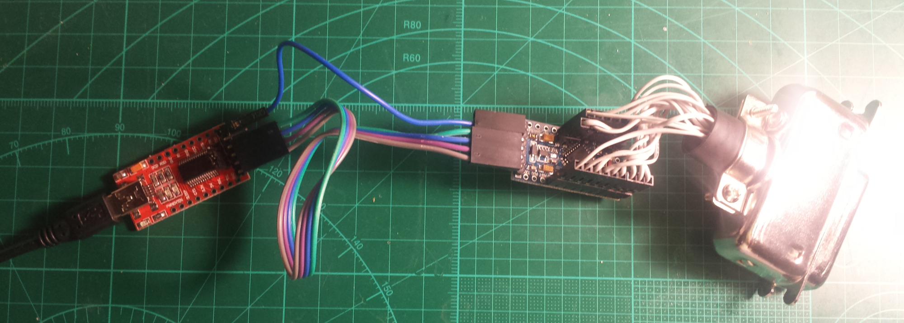

BASIC hp3478ext IMPLEMETATION

If you just want a GPIB adapter, this basic variant is all you need.
This is also the simplest way to try it as HP3478A extension, but then there are some limitations:
1. Needs external (USB) power.
2. External connection to HP3478 takes some space.
3. Needs some kind of case to be used safely.
4. Doesn't have a buzzer for continuity tester.
PARTS LIST
ATMega 328P module, 5V, 16MHz
Arduino pro mini compatible board. The project doesn't use Arduino environment, just the board.
https://www.ebay.com/sch/i.html?&_nkw=arduino+pro+mini
USB-UART converter module
For example, FTDI FT232RL-based or Silabs CP2102-based boards would work. It should have DTR pin and be 5V tolerant. You'll need FT232RL, if you want 2M baud rate.
https://www.ebay.com/sch/i.html?&_nkw=usb+uart
GPIB cable or connector
It seems to be easier to find a cable than a connector.
https://www.ebay.com/sch/i.html?&_nkw=gpib+connector
CONNECTIONS
Wire GPIB connector to ATMega 328P as shown in the table below. First column is for GPIB connector, the last is for 328P. It has arduino pin names silkscreened on the module.
/* GPIB| | | | atmega | pin | name | description | direction | pin | ----+-------+--------------------+------------+---------+ 1 | DIO1 | Data bit 1 (LSB) | Talker | PD2 32 | 2 2 | DIO2 | Data bit 2 | Talker | PD3 1 | 3 3 | DIO3 | Data bit 3 | Talker | PD4 2 | 4 4 | DIO4 | Data bit 4 | Talker | PD5 9 | 5 5 | EOI | End Of Identity | Talker | PB3 15 | 11 6 | DAV | Data Valid | Controller | PB4 16 | 12 7 | NRFD | Not Ready For Data | Listener | PC0 23 | A0 8 | NDAC | No Data Accepted | Listener | PC1 24 | A1 9 | IFC | Interface Clear | Controller | PC2 25 | A2 10 | SRQ | Service Request | Slave | PC3 26 | A3 11 | ATN | Attention | Controller | PC4 27 | A4 12 | | Shield | | | 13 | DIO5 | Data bit 5 | Talker | PD6 10 | 6 14 | DIO6 | Data bit 6 | Talker | PD7 11 | 7 15 | DIO7 | Data Bit 7 | Talker | PB0 12 | 8 16 | DIO8 | Data bit 8 (MSB) | Talker | PB1 13 | 9 17 | REN | Remote Enabled | Controller | PC5 28 | A5 18 | | GND DAV | | | 19 | | GND NRFD | | | 20 | | GND NDAC | | | 21 | | GND IFC | | | 22 | | GND SRQ | | | 23 | | GND ATN | | | 24 | | GND data | | | GND | LED | | OUT | PB5 | |BUZZER | Buzzer PWM (OC1B) | OUT | PB2 | */
Connect ATmega 328p to UART as follows:
TX-RXO RX-TXI GND-GND DTR-GRN 5V-VCC FLASHING THE FIRMWARE
A link to hex and eeprom
files can be found on the project page
https://kirill-ka.github.io/hp3478ext/
EEPROM .eep file contains the default settings and only needed if EEPROM gets corrupt for some reason. Firmware is flashed with the following avrdude command (assuming the bootloader is pre-programmed, to atmega which is usually the case): avrdude -b 57600 -c arduino -p m328p -P /dev/ttyUSB0 -U flash:w:hp3478-ext.hex Change /dev/ttyUSB0 appropriately. You could probably flash the hex with Arduino environment. I don't use it, so I don't know.
I highly recommend setting brownout detection fuses to 4.3V. That's because the atmega will be powered through GPIB signal lines when USB disconnected. Then it tends to hang and to corrupt it's eeprom. FUSE programming can't be done through bootloader and requires an ISP programmer:
avrdude -c dragon_isp -p m328p -Uefuse:w:0x04:m